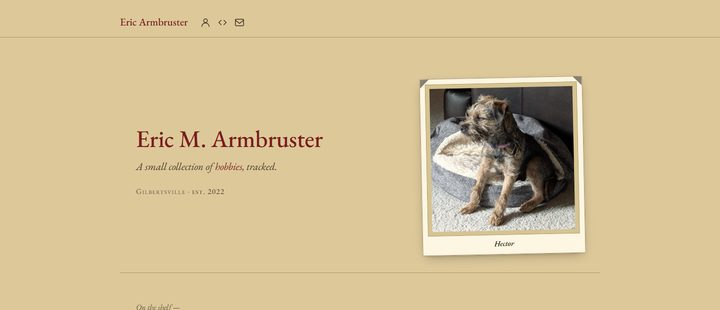
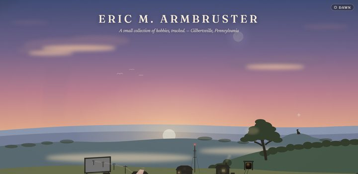
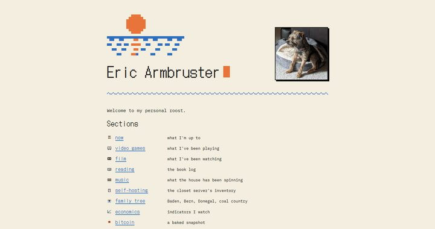

v1 — the bookshelf
until July 2026
Aged paper, EB Garamond, and a shelf of cloth spines — every section was a book, every page its own room. Its masthead claimed “est. 2022.”

v2 — the valley
June 2026 · never shipped
A painted world at dusk: the drive-in, the depot, the barn, the mine — each section a building in the valley. It lived in a folder for a month, lost the argument, and exists now only in git history and this screenshot.

v3 — the pixel rebuild
July 2026 — now
Four colors, one sprite sheet, DotGothic16, and a sun that sets over dithered water. Built from scratch in a week. You are standing in it.